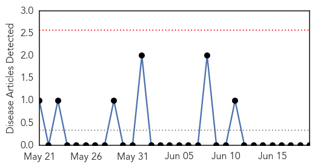
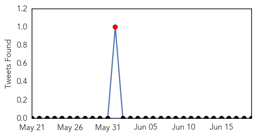

Mumps
30-Day Web Trend
0 alerts, 0 warnings

30-Day Twitter Trend
1 alerts, 0 warnings

Article Locations

Article Confidences

Top Articles:
-
No articles found for Jun 19, 2015
Top Tweets:
-
No tweets found for Jun 19, 2015
Influenza
30-Day Web Trend
0 alerts, 0 warnings

30-Day Twitter Trend
1 alerts, 0 warnings

Article Locations

Article Confidences

Top Articles:
- 0.998
- Adults go to pediatricians for flu vaccine, say doctors
- 0.989
- Doctors spell out flu risks among kids during monsoon
- 0.983
- Science, Technology and Medicine News Updates From Asia
- 0.977
- SA 'in for a bad flu season'
- 0.957
- Time to pick ourselves up-INSIDE Korea JoongAng Daily
- 0.955
- North Korea claims to have MERS cure
- 0.925
- H3N2 flu active again, claims 16 lives in HK in 6 days
- 0.900
- Pyongyang claims to invent cure for MERS
- 0.761
- Dog adopted in St. Paul tests positive for canine flu
- 0.751
- June 18, 2015 Archives
- 0.751
- June 18, 2015 Archives
- 0.751
- June 18, 2015 Archives
- 0.751
- June 18, 2015 Archives
- 0.655
- Twin Cities see first known case of canine influenza at St. Paul shelter
- 0.609
- Secret Vaccine Court
- 0.568
- Minnesota records 13 straight days with no new bird flu
- 0.557
- Turning the corner on bird flu? 2 weeks without a new case
Top Tweets:
-
No tweets found for Jun 19, 2015